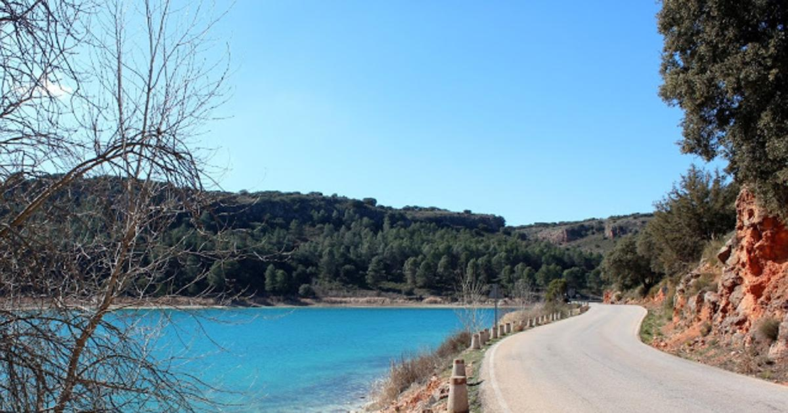
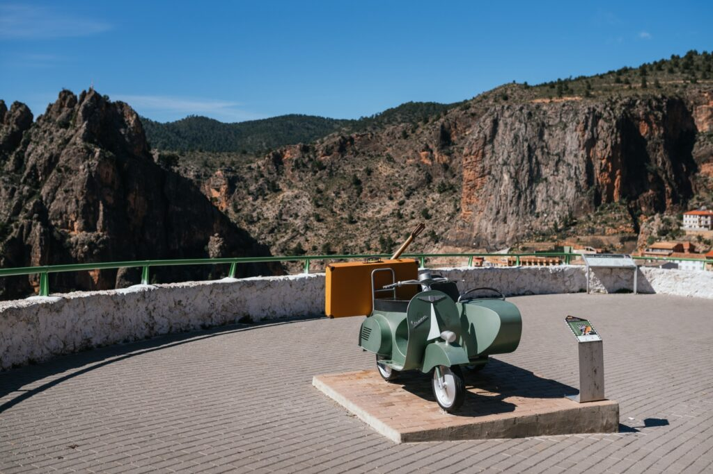
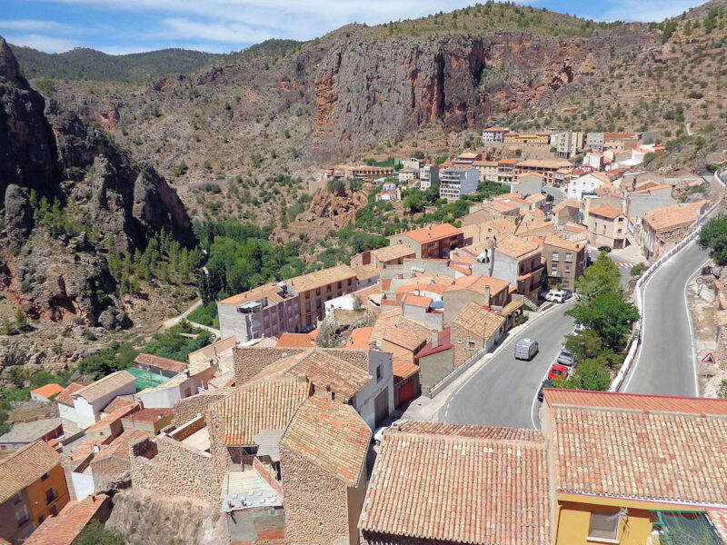

En moto por Castilla la Mancha
Inicio
Ayna
Nacimiento Río Cuervo
Formulario
Ayna
Especificaciones de la ruta
Distancia : 225Km
Tiempo : 3h y 15min
Donde comer en Ayna
Restaurante Casa Segunda
Comida casera y una terraza con vistas al rio Mundo

 
Mapa: ruta Ayna
distancia.png) Distancia : 225Km Distancia : 225Km
Distancia : 225Km Distancia : 225Kmrestaurant.png) Donde comer en Ayna
Donde comer en Ayna
location.png) Mapa: ruta Ayna
Mapa: ruta Ayna